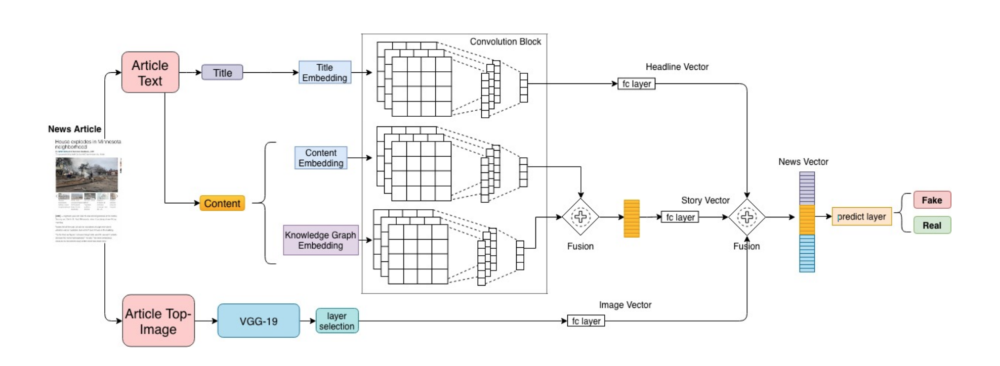

Fake News Detection
Fake news is spreading like wildfire across all media consumption platforms like Facebook, Twitter, Instagram and has recently started making its way into contemporary Instant Messaging Platforms (IMs) like Whatsapp. In the case of news on social media platforms, we have a lot of information available like it’s user, likes, shares, propagation pathways, etc. Fake news can be used for a number of malicious reasons such as political agendas, personal agendas, provide bogus health services, etc. We can study patterns to detect which news articles are reliable and which aren’t; a lot of this information can also be attributed to the users responsible for spreading the fake news article. However, this information isn’t available in the case of IMs. So we want to build a general solution which detects fake news only on the basis of content and doesn’t rely on any network information. This will enable our model to be replicable on any OSM or IM or any network with modalities incorporated in our model.
This work has been submitted to NAACL-HLT 2019.